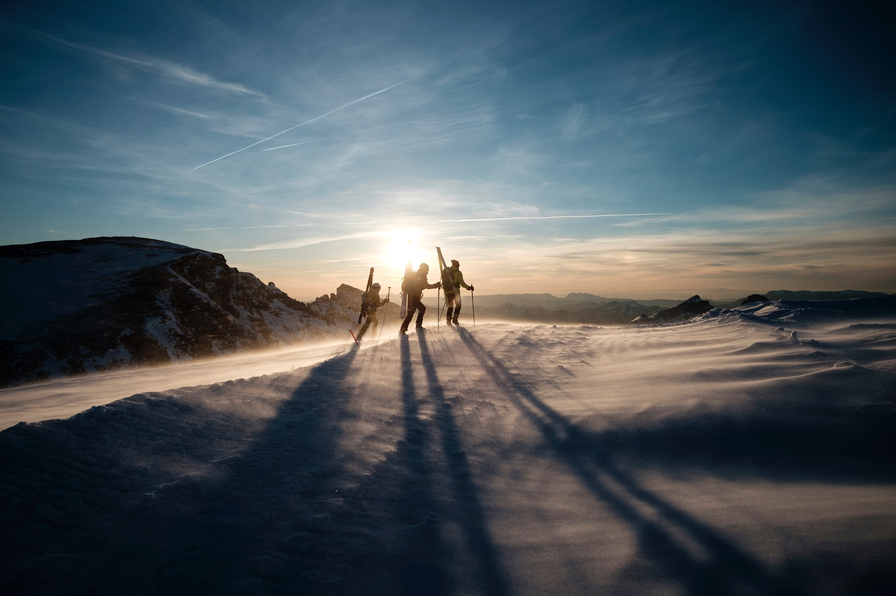
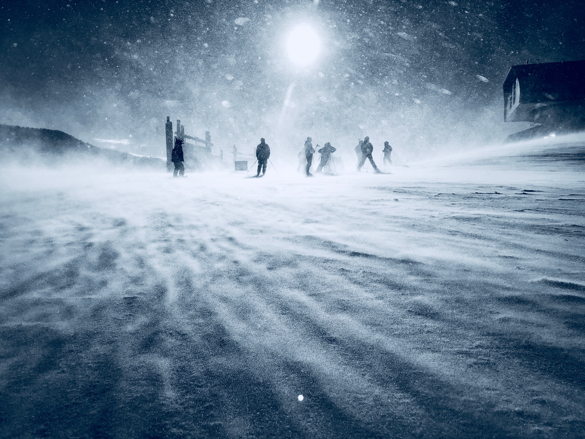

Åre has attracted visitors for centuries, from pilgrims to entrepreneurs and ski enthusiasts, from around the world. Despite its location in sparsely populated Jämtland, Åre has grown to be a ski center for the whole of Scandinavia, one where locals and visitors enjoy world-class skiing. The village has 1400 inhabitants, but is filled with life and movement thanks to its international character, blooming business, and the fantastic scenery that surrounds it.

The western areas of Jämtland, where Åre is, are famed for their barren beauty. The terrain consists of mountain tops, waterfalls, lakes and other waterways, and is home to reindeer, bear, moose, lynx and even wolverine. Due to its proximity to the Atlantic and the Scandes, which run along the border between Sweden and Norway, the weather in this beautiful region is not always hospitable. Severe blizzards and winds of up to 20 meters per second (the record for the top of Åreskutan is 48 meters per second) are not unusual. The warm and damp winds from the Gulf Stream, combined with hard westerlies, contribute to ice formation on the summit. But Åre and Åreskutan’s location also provides the perfect conditions for skiing, climbing, cycling and hiking, with heavy snows in the winter and warm, sunny spring and summer days.
For more info about Åre 2019/Around 11,000 of Jämtland’s 126,000 inhabitants live in Åre Municipality. The county is about the same size as Switzerland (which has eight million inhabitants) and much of its nature is, in principle, pristine. The impressive waterfall in Tännforsen, which is Sweden’s biggest, and the smaller but more accessible Ristafallet, are examples of attractions that bring many domestic and international visitors every year. The opportunity to enjoy the silence and remoteness that Jämtland offers is the region’s tourist industry’s biggest asset.
Åre may look small, but don’t let that fool you. It is actually a city in the shape of a village, where both it and its surroundings provide almost endless opportunities for things to do. If you want to experience what nature has to offer, there is everything from riding to game safaris and caving; if you want a more urban experience, the village has plenty of shops, restaurants, clubs, spas, and lots more, all year round. The focus is on skiing during the winter, although Åre has numerous other activities on offer, but there is lots to fill your days throughout the rest of the year too. Early spring – spring-winter – normally offers the year’s best weather in Åre, and many people take the chance to enjoy ski touring, slush skiing and Sweden’s best après ski in the sunshine. In the summer, the village is invaded by bikers, hikers and – in the skies – paragliders who circle like exotic birds with Åreskutan as a backdrop. Åre bustles with life in the winter months, which is noticeable in its nightlife. Åre has something for practically everyone and, after a long (or short) day on the slopes, many people want to round off with an après-ski. Afterwards, there is a great range of bars and clubs to choose from if you want to keep partying. For more detailed information about things to do in and around Åre, go to www.aresweden.com/
